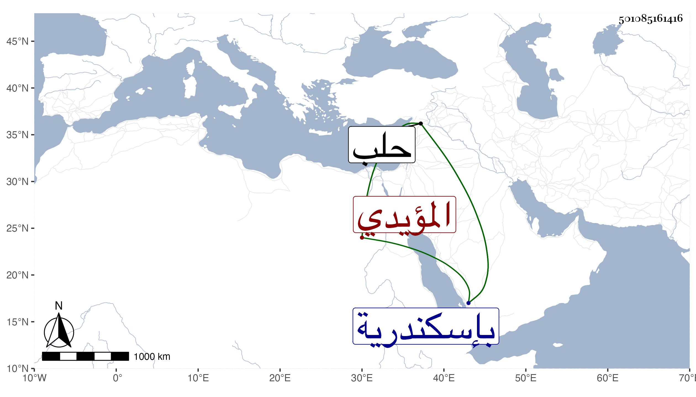

0902Sakhawi.DawLamic.ITO20230111-ara1.EIS1600.501085161416
Biography ID: 501085161416
737
قشتمر المؤيدي شيخ أحد خاصكيته وصغار دواداريته ثم بعد موته ناب بإسكندرية من قبل ولده المظفر أحمد عزله ططر بدواداره فارس ثم قبض عليه وحبسه إلى أن أخرجه الأشرف وعمله الأتابك حلب وتوجه إليها فدام حتى قتل في وقعة كانت بين التركمان وعسكر حلب في سنة ثلاثين ، وكان أشقر معتدل القد ساكنا لا بأس به .
